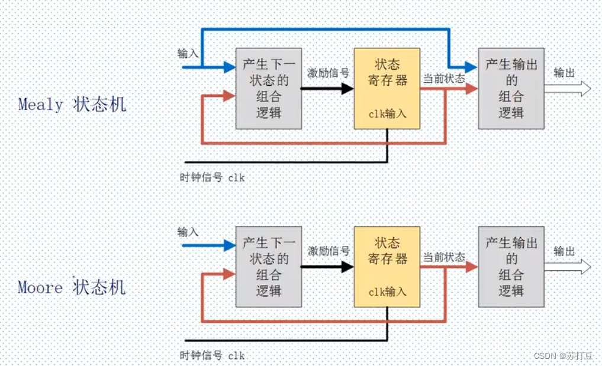
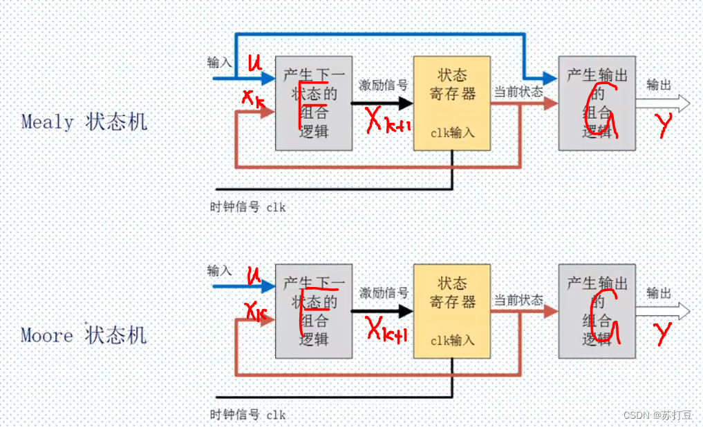
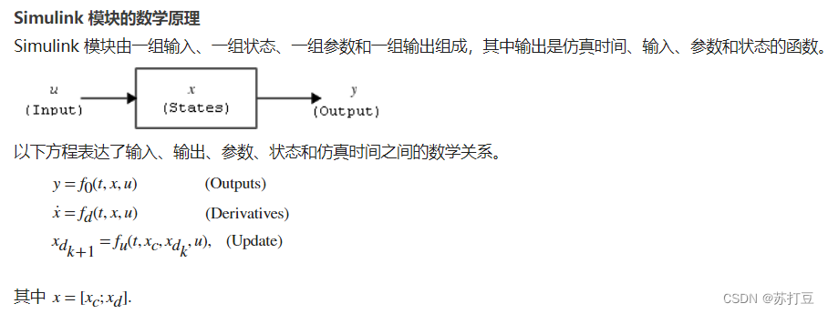

状态机、状态空间方程、传递函数的联系
我一直有这样的疑问为什么有限状态机，状态空间方程，传递函数都能写成S-function模块，答案先放在这：
本质上，他们都是状态机
状态空间（state-space）方程
状态空间方程是现代控制理论的概念，其离散形式简单表示为：
其中$x$表示当拍状态，$x_{k+1}$为下一拍状态，$u$为输入，$y$为输出。
有限状态机（FSM）
状态机是描述一个过程的手段，一般在编程中使用有限状态机（FSM）。FPGA中状态机（四段式）的实现如下图：

Mealy机与Moore机的区别在于是否有feedthrough。
二者关系

Mealy机表示为：
Moore机表示为：
与状态空间方程完美对应：
- 状态空间方程是一种线性化的多状态的无限状态机
- FSM是一种单状态的有限状态机
也就是说这两者本质上都是状态机，他们都是在描述一个事物的发展过程，都是对现实事物发展的一种抽象。真的很神奇！
Simulink S-Function
Simulink仿真其实就是在模拟事物发展的过程，其实每个模块都是一个状态机。

里面的状态分为了离散状态和连续状态。
- 有限状态机状态：单个有限离散状态
- 离散状态空间方程状态：一组无限离散状态
- 连续状态空间方程状态：一组无限连续状态
- 离散传递函数：单个无限离散状态，并且隐藏了状态
- 连续传递函数：单个无限连续状态，并且隐藏了状态
离散状态与连续状态的区别是： - $\mathcal{F}(x_c,u)$ 对应Update函数（更新）。
- $\mathcal{F}(x_d,u)$ 对应Derivatives函数（微分,需要龙格库塔解微分方程）。
而$\mathcal{G}(x,u)$都对应Output函数，Output中如果有$u$，则为Mealy机，没有则为Moor机。